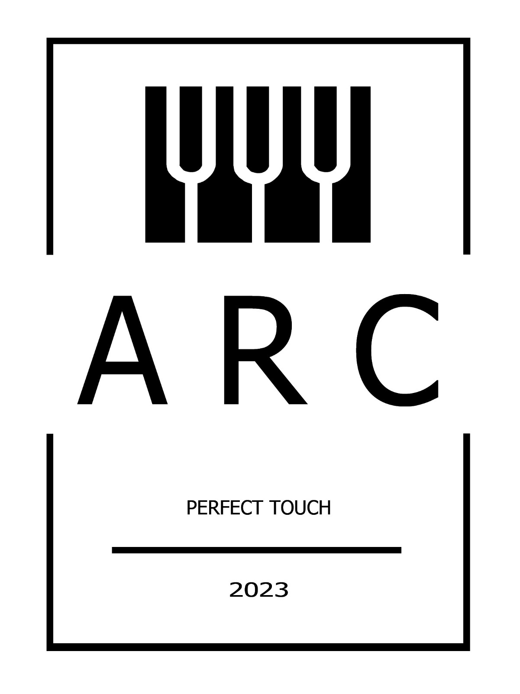

Costruzione e restauro di tastiere per pianoforti, organi, clavicembali e spinette.
Laboratorio a Piobesi Torinese (Torino).
A.R.C. è la terza generazione di una linea di costruttori di tastiere: l'esperienza dei Fratelli Barra è passata a Carlo Gandolfo ("Gandolfo Tastiere") e oggi continua qui, per non disperdere un'arte artigianale storica.
Dal 2023 costruiamo e restauriamo tastiere per pianoforti, organi, clavicembali e spinette, unendo ricerca e innovazione al sapere ereditato dalle botteghe che ci hanno preceduto.
Costruiamo tastiere nuove e restauriamo quelle esistenti, per musicisti, costruttori e restauratori.
Costruzione di tastiere per organi, pianoforti, clavicembali e spinette, a trasmissione meccanica, fedeli ai modelli storici o su specifica del cliente.
Scopri di più →
Tastiere complete di contatti e dotazioni elettriche, predisposte per il collegamento ai centralini degli organi.
Scopri di più →
Recupero di tastiere antiche e consumate dal tempo: nuove coperture, riparazione di leve e bilancieri, ripristino del tocco originale.
Scopri di più →